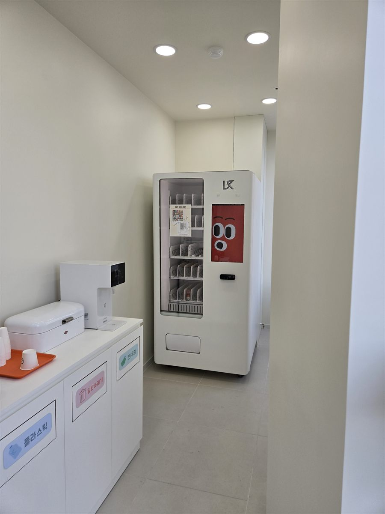

스터디카페는 자판기를 놓을 자리가 애초에 정해져 있는 업종입니다. 좌석마다 사람이 앉아 있으니 열람 공간에는 둘 수 없고, 남는 곳은 정수기와 쓰레기통이 있는 휴게 공간, 사실상 복도 한 칸입니다. 그래서 이 업종의 설치는 "어디에 둘까"가 아니라 "그 좁은 한 칸에 어떻게 들어가게 할까"에 가깝습니다. 사진이 그 결과입니다. 한쪽에는 정수기와 컵, 그 아래로 분리수거함 세 개가 늘어서 있고, 자판기는 맞은편이 아니라 복도 가장 안쪽 벽을 등지고 섰습니다.
현장에서 먼저 본 것은 세 가지였습니다. 첫째는 통행 폭입니다. 좁은 복도에서 기계를 아무 데나 세우면 두 사람이 엇갈려 지나갈 수 없게 됩니다. 물 받는 사람과 쓰레기 버리는 사람이 동시에 서는 자리라 더 그렇습니다. 그래서 수납장과 마주 보는 벽은 비워 두고 막다른 안쪽으로 밀어 넣었습니다. 지나다니는 길이 아니라 끝까지 걸어 들어가 서는 자리가 되게 한 것입니다. 둘째는 소음입니다. 냉장 기능이 있는 기계는 압축기가 몇 분에 한 번씩 돌았다 멈췄다 합니다. 공부하는 공간에서는 이 켜지는 순간이 유난히 크게 들립니다. 열람실 문에서 가장 먼 쪽을 고르고, 기계 뒤판이 열람실과 맞붙은 벽이 아닌지 확인했습니다. 셋째는 전원입니다. 사진처럼 정수기가 이미 있는 자리는 그 콘센트 하나에 다 물려 쓰기 쉬운데, 정수기와 냉장 자판기는 둘 다 꾸준히 전기를 먹습니다. 분전반을 열어 다른 회로에서 따로 끌어올 수 있는지부터 봤습니다. 바닥은 대형 타일이라 이음매를 걸치지 않게 위치를 조금 옮기고 수평계로 다리를 맞췄습니다.
천안 스터디카페에 맞는 구성
한 대만 놓는 자리에서는 무엇을 넣느냐보다 무엇을 빼느냐가 중요합니다. 칸이 한정돼 있어서, 가짓수를 늘리면 칸당 수량이 줄고 금방 빕니다. 그래서 이 현장은 냉장 음료를 중심으로 잡았습니다. 바로 옆에 정수기가 있으니 생수는 비중을 줄이고, 대신 캔커피와 이온음료, 탄산 쪽에 칸을 더 줬습니다. 무거운 페트와 캔은 아래 칸, 가벼운 봉지 간식은 위 칸으로 올렸습니다. 가벼운 품목은 스프링이 한 바퀴 돌아도 제자리에 남는 일이 있어서 앞으로 바짝 당겨 세우는 것이 요령입니다.
간식은 소리와 냄새가 적은 것으로 골랐습니다. 열람실에 들고 들어가는 것을 막을 수는 없으니, 애초에 봉지가 요란하게 바스락거리는 과자는 줄이고 젤리·초코바·비스킷처럼 조용히 먹을 수 있는 쪽으로 돌렸습니다. 결제는 카드와 삼성페이·카카오페이·네이버페이를 받고 현금함은 넣지 않았습니다. 무인으로 돌리는 매장에서 잔돈을 채우고 빼는 일은 사장님이 매장에 나와야만 할 수 있는 일이라, 그 일 하나 때문에 무인이 아니게 됩니다. 재고와 매출은 휴대폰 앱에서 바로 확인할 수 있고 특정 칸이 품절되면 알림이 오게 맞춰 드렸습니다. 매장에 가지 않고도 무엇을 채워야 할지 아는 것 — 사람이 상주하지 않는 업종에서는 이게 가장 큰 차이입니다.
스터디카페 자판기, 좋은 점과 어려운 점
좋은 점부터 적겠습니다. 첫째, 이용자가 밖으로 나갔다 오지 않습니다. 음료 하나 사러 나가면 자리를 비워야 하고, 나간 김에 그냥 집에 가는 일도 생깁니다. 안에서 해결되면 체류 시간이 길어집니다. 둘째, 사람이 붙지 않아도 됩니다. 무인 운영과 성격이 그대로 맞습니다. 셋째, 심야에도 팔립니다. 스터디카페는 밤이 본 시간대인데, 그 시간엔 주변 가게가 대부분 닫혀 있습니다. 넷째, 자리를 거의 안 먹습니다. 벽 한 면 1미터 남짓이면 들어갑니다. 좌석을 빼지 않아도 된다는 뜻입니다.
어려운 점도 솔직히 적습니다. 첫째는 매출이 시험 기간에 쏠린다는 점입니다. 중간·기말과 수능 앞은 사람이 몰리고, 방학 중반이나 시험이 끝난 직후에는 뚝 떨어집니다. 유통기한이 짧은 품목은 신중하셔야 합니다. 둘째는 소음입니다. 앞서 적은 압축기 문제인데, 열람실과 벽 하나로 붙은 자리밖에 없다면 냉장이 아닌 상온 기계를 쓰는 것도 방법입니다. 셋째는 쓰레기입니다. 기계 옆에 수거함이 없으면 빈 캔이 책상과 창틀에 남습니다. 사진처럼 분리수거함을 같은 줄에 두는 것이 결국 가장 깔끔합니다. 넷째는 조명 반사입니다. 천장 다운라이트가 기계 전면 유리 바로 위에 있으면 안에 든 물건이 빛에 묻혀 안 보입니다. 설치할 때 각도를 보고 조금 틀거나 위치를 옮깁니다. 다섯째는 임대 공간이라는 점입니다. 건물주나 관리 주체의 동의, 전기 사용 조건을 기계를 고르기 전에 확인하시는 편이 안전합니다.
천안 무인매장, 이런 자리가 잘 됩니다
천안은 충남에서 인구가 가장 많은 도시이고, 대학과 산업단지와 신도시 주거지가 한 도시 안에 함께 있습니다. 자판기 자리도 그 성격을 따라갑니다. 첫째는 불당동과 백석동 일대입니다. 아파트가 크게 들어선 신도시 주거지로, 학원과 스터디카페, 상가 건물이 밀집해 있어 학생과 직장인이 함께 쓰는 자리가 많이 나옵니다. 둘째는 두정동과 성정동, 쌍용동 방면입니다. 1호선 두정역과 쌍용역을 끼고 원룸과 오피스텔, 상가가 섞여 있는 구역이라 밤에 도는 자리가 많습니다. 셋째는 대학 주변입니다. 단국대 천안캠퍼스와 상명대 천안캠퍼스, 호서대, 백석대가 시내에 있고 병천면 쪽에는 한국기술교육대가 있습니다. 학교 앞 원룸촌과 통학로는 방학에 비는 대신 학기 중에 집중되는 자리입니다.
그 밖에 문의가 꾸준한 자리는 천안역과 신부동 방면 구도심 상권, 직산읍·성환읍·성거읍 쪽 산업단지와 공장 휴게실, 청당동·신방동의 아파트 단지 상가, 그리고 목천읍과 입장면 방면의 물류·제조 시설입니다. 같은 천안이라도 신도시 상가는 저녁과 주말에 돌고, 산업단지는 평일 낮 교대 시간에 몰립니다. 넣는 품목이 반대로 가는 자리들입니다. 그래서 상담 때는 주소보다 그 건물에 사람이 몇 시에 가장 많은지, 주말에는 비는지를 먼저 여쭙습니다. 아산 배방·탕정 방면, 세종과 공주, 경기 평택·안성 쪽, 충북 진천 방면은 한 번 나가는 길에 같이 보는 일이 많습니다.
천안 서비스 지역
동남구 — 신부동 · 안서동 · 유량동 · 구성동 · 청수동 · 청당동 · 봉명동 · 다가동 · 원성동 · 문화동 · 사직동 · 영성동 · 성황동 · 신방동 · 용곡동 · 삼룡동 · 목천읍 · 풍세면 · 광덕면 · 북면 · 성남면 · 수신면 · 병천면 · 동면
서북구 — 두정동 · 성정동 · 쌍용동 · 백석동 · 불당동 · 차암동 · 업성동 · 와촌동 · 신당동 · 부대동 · 성환읍 · 성거읍 · 직산읍 · 입장면
역 — 천안역 · 두정역 · 쌍용(나사렛대)역 · 봉명역 · 직산역 · 성환역
주요 시설 — 단국대 천안캠퍼스 · 상명대 천안캠퍼스 · 호서대 · 백석대 · 한국기술교육대(병천) · 천안시청 · 천안종합버스터미널 · 천안 제3일반산업단지 · 독립기념관 방면
인접 — 아산(배방 · 탕정 · 온양) · 세종 · 공주 · 당진 · 예산 · 경기 평택(팽성 · 안중) · 경기 안성 · 충북 진천 방면
충남 전역(아산 · 서산 · 당진 · 논산 · 공주 · 보령)과 대전 · 세종까지 같은 조건으로 나갑니다.
천안 무인창업, 이렇게 시작하시면 됩니다
설치비는 받지 않습니다. 자리 확인부터 품목 구성, 기계 반입, 카드 결제 연동, 재고 채우는 방법까지 한 번에 안내해 드립니다. 스터디카페나 독서실처럼 좁은 휴게 공간에 넣는 자리는 기계 성능보다 폭과 반입 경로가 먼저입니다. 견적 전에 확인하는 것은 전기 위치·벽면 폭·반입 경로 세 가지입니다. 특히 출입문 폭과 턱, 엘리베이터 크기에 따라 들어가는 기계가 달라지니 미리 봅니다. 2층 이상이고 엘리베이터가 작은 건물이면 기계 크기를 처음부터 다르게 잡아야 합니다. 휴게 공간 사진 한 장과 대략의 벽면 폭만 보내 주셔도 들어갈지 아닐지는 미리 봐 드립니다.
비용은 구입이 렌탈보다 유리한 편입니다. 렌탈료를 몇 년 내는 것보다 처음에 사 두는 쪽이 총액이 낮게 나오는 경우가 많고, 오래 쓸수록 차이가 벌어집니다. 다만 임대 계약 기간이 짧게 남았거나 한 해만 시범으로 돌려 보는 경우라면 렌탈을 함께 비교해 보시는 편이 낫습니다. 구성별 36개월 총비용은 구입 vs 렌탈 비교 가이드에 정리해 두었습니다.
관련 검색어: 천안무인자판기 · 천안무인자판기설치 · 천안스터디카페자판기 · 두정동자판기 · 불당동자판기
천안 무인자판기 설치 상담
세워 둘 자리 사진 한 장만 보내 주셔도 됩니다. 남는 벽과 전기 위치, 복도 폭과 반입 경로를 보고 들어갈 수 있는 크기와 대수를 먼저 봐 드린 뒤 견적을 보내 드립니다.
※ 사진은 픽포스가 시공한 설치 사례이며, 글에 적힌 지역의 현장 사진은 아닙니다. 자판기 구성과 품목은 자리와 업종에 따라 달라지며, 임대 공간 설치는 관리 주체 동의와 전원 회로, 반입 경로를 현장에서 먼저 확인합니다. 정확한 금액은 견적서로 안내드립니다.